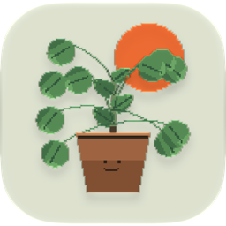

Shelf Life
by Paul Octavious
A small pixel room that looks after your real house plants, with a gardener who tells you who's thirsty.
Support
Questions, a problem with the app, or a plant we don't have yet? Write to us and we'll get back to you. You can also send a report from inside the app: Settings › Report a problem.
- Adding a plant: tap ADD to go to the conservatory, find your plant on its floor or search for it, and tap it to bring it home.
- Watering: CARE shows who wants water today. Tap I WATERED IT once you've watered the real one.
- The alarm clock needs iOS 26 or later. If it doesn't ring, check Settings › Shelf Life and make sure Alarms are allowed.
- No sound? Check the side switch or Silent Mode, and that the stereo in your room is playing.
- Your plants live on your device. They come along in your iPhone or iPad backup. Deleting the app deletes them.
- Restoring the app: download it again from the App Store with the same Apple Account, at no charge.
Privacy Policy
Shelf Life doesn't collect your personal information. There's no account, no ads, no analytics and no tracking. Nothing the app sends is linked to who you are.
What stays on your device
- Your plants, their watering records, the photos you take of them, your room and your settings are saved inside the app on your iPhone or iPad. We never see them.
- Identifying a plant from a photo happens on your device, using Apple's own image recognition.
- The alarm, naps and timers are set with Apple's alarm system on your device.
What leaves your device
- Weather and daylight. To light your room like the day outside, the app asks Open-Meteo, a weather service, for the weather in the city you picked. The request carries that city's coordinates, not your location or anything about you.
- Only when you choose to: sending a room postcard to a friend, or redeeming a gift code, sends that postcard or code to our server so it can be delivered. If you tick the plant census when you send a plant, its species and generation are counted, with nothing about you.
- Sharing a plant's tag goes wherever you send it through the iOS share sheet. It doesn't pass through us.
Permissions
- Camera: only when you photograph a plant.
- Add to Photos: only when you save a plant's tag or a video of your room.
- Apple Music: to read the song that's playing, so your plants can react to it.
- Alarms and notifications: scheduled on your device for your alarm and watering reminders.
What we don't do
- No accounts or sign-in, no advertising, no analytics or tracking across apps and websites.
- We don't sell, rent or share personal data, because we don't have any.
- Shelf Life isn't directed at children under 13, and collects no personal information from anyone.
If this ever changes, we'll update this page before the app does anything differently.
Questions about privacy: support@pauloctavious.com
Last updated: October 3, 2026